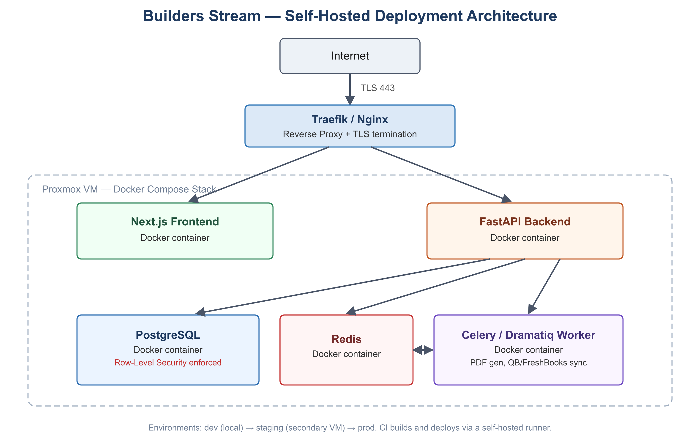

Tenant isolation
Company data is separated at the database layer, helping keep each organization’s information scoped to the right people.
SECURITY BY DESIGN
Builders Stream is designed with practical protections for the information that keeps your business moving.
Company data is separated at the database layer, helping keep each organization’s information scoped to the right people.
Admins, managers, crews, accountants, and clients can receive appropriate access for the work they need to do.
Important transitions and approvals are designed to leave a durable record, creating more accountability across the workflow.
BUILT TO BE TRUSTED
From controlled access to deployment architecture, the platform is being built to support dependable day-to-day operations for growing teams.
